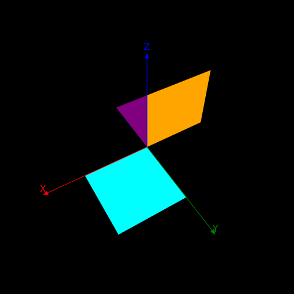
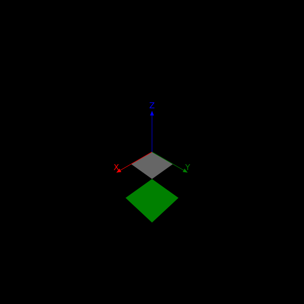
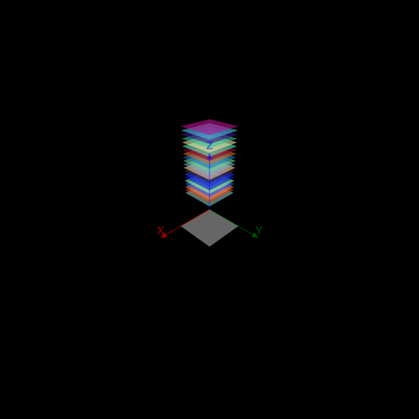
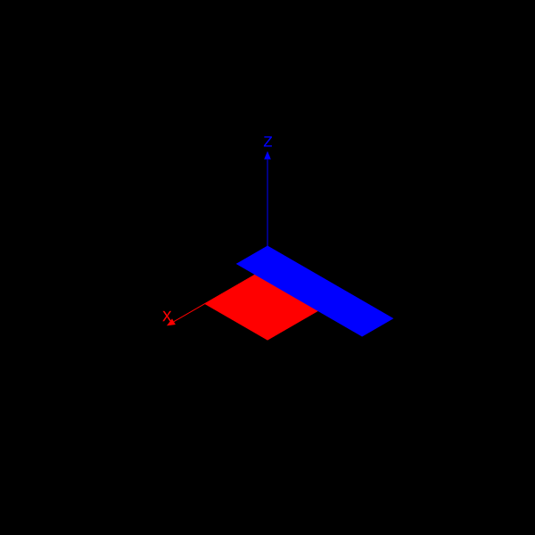

Tools
There are some useful tools that might help you explore the limited 3D world provided by Thebes.jl.
Getting your hands dirty
Suppose you want to remove the front-facing faces of an object, in order to see inside. That's possible, but a bit of code is needed.
eyepoint(200, 200, 200)
axes3D(300)
setlinejoin("bevel")
include(dirname(pathof(Thebes)) * "/../data/moreobjects.jl")
objectfull = make(cuboctahedron, "the full object")
objectcut = make(cuboctahedron, "the cut-open object")
map(o -> scaleby!(o, 60, 60, 60), (objectfull, objectcut))
function cullfrontfaces!(m::Object, angle;
eyepoint::Point3D=eyepoint())
avgs = Float64[]
for f in m.faces
vs = m.vertices[f]
s = 0.0
for v in vs
s += distance(v, eyepoint)
end
avg = s/length(unique(vs))
θ = surfacenormal(vs)
if anglebetweenvectors(θ, eyepoint) > angle
push!(avgs, avg)
end
end
neworder = reverse(sortperm(avgs))
m.faces = m.faces[neworder]
m.labels = m.labels[neworder]
return m
end
sortfaces!.((objectcut, objectfull))
cullfrontfaces!(objectcut, π/3)
translate(-200, 0)
pin(objectcut)
translate(400, 0)
pin(objectfull)
@show length(objectcut.faces)
@show length(objectfull.faces)length(objectcut.faces) = 10
length(objectfull.faces) = 14The object on the left has had its four frontfacing faces removed. The one on the right is intact.

Geometry
There are some basic geometry utility functions - some of them are analogous to their Luxor 2D counterparts.
General
Thebes.axes3D — Functionaxes3D(n=100)Draw labelled 3D axes at (0, 0, 0) with length n.
Thebes.carpet — Functioncarpet(n; kind=:circular)Draw a circular carpet centered at the origin, using current Luxor parameters.
If kind is not :circular, the carpet will be a square.
Points that can't be rendered are not included in the final shape.
Thebes.drawcube — Functiondrawcube(n=10, action=:stroke)Draw a cube. drawcube(1) draws a wireframe unit cube.
Distances
Luxor.between — Functionbetween(p1::Point3D, p2::Point3D, x=0.5)
between((p1::Point3D, p2::Point3D), x=0.5)Find a point on a line between two 3D points. If x is 0.5, the returned point should be halfway between them.
Luxor.distance — Functiondistance(p1::Point3D, p2::Point3D)Return the distance between two points.
Luxor.midpoint — Functionmidpoint(pt1::Point3D, pt2::Point3D)Find the midpoint between two points. See also between().
Rotations
The task of rotating points in 3D space is given to Rotations.jl, a powerful and sophisticated package that offers many advanced functions for rotating things in 3D space. For Thebes, you'll probably only need the basics, but there's things like quaternions if you want to get fancy.
This code draws a cyan square lying in the XY plane with a corner at the 3D origin. The square is then rotated about the Z axis by 180° and drawn in purple. Then the square is rotated again, about the X axis, by 90° and drawn in orange.
eyepoint(Point3D(150, 250, 350))
perspective(520)
function drawsquare(ptlist)
pin(ptlist, gfunction = (p3, p2) ->
poly(p2, :fill, close=true))
end
square = [Point3D(0, 0, 0), Point3D(100, 0, 0), Point3D(100, 100, 0), Point3D(0, 100, 0)]
sethue("cyan")
drawsquare(square)
sethue("purple")
rotateby!(square, RotZ(π))
drawsquare(square)
sethue("orange")
rotateby!(square, RotX(-π/2))
drawsquare(square)
axes3D(160)
The most useful rotation functions are RotX(), RotY(), RotZ(), RotXY(), and RotXYZ(), which rotate around the axes. All the other permutations are available. A RotXYZ() rotation takes three angles. The right-most rotation is applied first, so RotXYZ() applies the Z rotation, followed by the Y, then followed by the X.
You can compose two or more rotations by multiplying them together, eg RotX(π/2) * RotZ(π/4).
The rotation functions without ! return new points or arrays of points.
There are also functions that accept a second 3D point, the about point. The rotation is applied around that point, rather than an axis. In the next example, the square is rotated in Z about the corner point at Point3D(100, 100, 0) and drawn in green.
sethue("grey40")
drawsquare(square)
sethue("green")
rotateby!(square, Point3D(100, 100, 0), RotZ(π))
drawsquare(square)
axes3D(160)
rotateby(point::Point3D, r::Rotation)rotateby(point::Point3D, about::Point3D, r::Rotation)rotateby(ptlist::Array{Point3D, 1}, r::Rotation)rotateby(ptlist::Array{Point3D, 1}, about::Point3D, r::Rotation)rotateby(ptlist::Array{Point3D, 1}, angleX, angleY, angleZ)rotateby(pt::Point3D, angleX, angleY, angleZ)rotateby(point::Point3D, about::Point3D, angleX, angleY, angleZ)rotateby(m::Object, angleX, angleY, angleZ)rotateby(m::Object, pt::Point3D, angleX, angleY, angleZ)
Those with ! mutate the array of points in place. (You can't modify a single point.)
rotateby!(ptlist::Vector{Point3D}, r::RotXYZ{Float64})rotateby!(ptlist::Array{Point3D, 1}, angleX, angleY, angleZ)rotateby!(ptlist::Array{Point3D, 1}, existingpt::Point3D, angleX, angleY, angleZ)rotateby!(ptlist::Array{Point3D, 1}, existingpt::Point3D, r::Rotation)rotateby!(m::Object, angleX, angleY, angleZ)rotateby!(m::Object, pt::Point3D, angleX, angleY, angleZ)
Thebes.rotateX — FunctionrotateX(pt3D::Point3D, rad)Return a new point resulting from rotating the point around the x axis by an angle in radians.
Rotations are anticlockwise when looking along axis from 0 to +axis.
Thebes.rotateY — FunctionrotateY(pt3D::Point3D, rad)Return a new point resulting from rotating the point around the y axis by an angle in radians.
Rotations are anticlockwise when looking along axis from 0 to +axis.
Thebes.rotateZ — FunctionrotateZ(pt3D::Point3D, rad)Return a new point resulting from rotating the point around the z axis by an angle in radians.
Thebes.rotateby! — Functionrotateby!(ptlist::Array{Point3D, 1}, angleX, angleY, angleZ)Modify a list of points by rotating each one around the x, y, and z axes by angleX, angleY, angleZ.
rotateby!(ptlist::Array{Point3D, 1}, existingpt::Point3D, angleX, angleY, angleZ)
rotateby!(ptlist::Array{Point3D, 1}, existingpt::Point3D, r::Rotation)
rotateby!(ptlist::Array{Point3D, 1}, r::Rotation=RotXYZ{Float64})Rotate each point in the list by rotation (or angleX, angleY, angleZ) around another point (or origin).
rotateby!(o::Object, r::Rotation)
rotateby!(o::Object, angleX, angleY, angleZ)Rotate an object through rotation r, or around the x, y, and/or z axis by angleX, angleY, angleZ.
rotateby!(o::Object, pt::Point3D, angleX, angleY, angleZ)
rotateby!(o::Object, pt::Point3D, r::Rotation=RotXYZ(0, 0, 0))Rotate an object around a point by rotation r, or angleX, angleY, angleZ.
Thebes.rotateby — Functionrotateby(pt::Point3D, angleX, angleY, angleZ)
rotateby(ptlist::Array{Point3D, 1}, angleX, angleY, angleZ)
rotateby(point::Point3D, r::Rotation)
rotateby(ptlist::Array{Point3D, 1}, r::Rotation)Return a new point/list of points resulting from rotating around the x, y, and z axes by angleX, angleY, angleZ.
The Z rotation is first, then the Y, then the X.
A 3×3 rotation matrix parameterized by the "Tait-Bryant" XYZ Euler angle convention, consisting of first a rotation about the Z axis by theta3, followed by a rotation about the Y axis by theta2, and finally a rotation about the X axis by theta1.
rotateby(point::Point3D, about::Point3D, angleX, angleY, angleZ)
rotateby(point::Point3D, about::Point3D, r::Rotation)
rotateby(ptlist::Array{Point3D, 1}, about::Point3D, r::Rotation)rotateby(o::Object, angleX, angleY, angleZ)Rotate a copy of the object by angleX, angleY, angleZ.
rotateby(o::Object, pt::Point3D, angleX, angleY, angleZ)
rotateby(o::Object, pt::Point3D, r::Rotation=RotXYZ(0, 0, 0))Rotate a copy of the object around a point by rotation r, or angleX, angleY, angleZ.
Position and scale
You can change the position and scale of things. moveby() makes a copy, moveby!() moves the original.
In the next example, the square is first moved by -100/-100/0, then copies are moved upwards by the loop index i.
sethue("grey40")
drawsquare(square)
moveby!(square, Point3D(-100, -100, 0))
setopacity(.6)
for i in 10:10:200
randomhue()
drawsquare(moveby.(square, Point3D(0, 0, i)))
end
axes3D(160)
scaleby!() changes the scale of a list of points.
axes3D(160)
sethue("red")
drawsquare(square)
sethue("blue")
scaleby!(square, .5, 2, 1)
moveby!(square, Point3D(0, 0, 30))
drawsquare(square)
Thebes.moveby! — Functionmoveby!(ptlist::Point3D, x, y, z)
moveby!(ptlist::Point3D, pt::Point3D)Move all points in the list by a vector.
moveby!(o::Object, x, y, z)
moveby!(o::Object, pt::Point3D)Set the position of object to Point3D(x, y, z).
Thebes.moveby — Functionmoveby(pt::Point3D, d::Point3D)Return a new point that's the result of moving a point pt by a vector d.
moveby(o::Object, x, y, z)
moveby(o::Object, pt::Point3D)Set the position of a copy of the object to Point3D(x, y, z).
Thebes.scaleby! — Functionscaleby!(ptlist::Array{Point3D, 1}, x, y, z)Scales a list of points by multiplying by x in X, y in Y, z in Z.
scaleby!(o::Object, x, y, z)Scale object by x in x, y in y, and z in z.
scaleby!(o::Object, d)Scale object by d in x, d in y, and d in z.
Coordinates
Thebes.sphericaltocartesian — Functionsphericaltocartesian(ρ, θ, ϕ)Return Point3D(x, y, z) corresponding to (ρ, θ, ϕ):
ρ is the distance from the origin (ie radius)
θ is the azimuthal angle (the longitude) 0 is +x, π is -x, 2π is +x
ϕ is the polar angle (the latitude) 0 is North Pole, π is South Pole
There are two major conventions for spherical coordinate notation.
In physics books:
(ρ, θ, φ) gives the radial distance, polar angle (latitude), and azimuthal angle (longitude)
In mathematics books:
(ρ, θ , φ ) gives the radial distance, azimuthal angle (longitude), and polar angle (latitude)
So we're using the mathematics one here.
sphericaltocartesian((ρ, θ, ϕ))Return Point3D(x, y, z) corresponding to (ρ, θ, ϕ).
Thebes.cartesiantospherical — Functioncartesiantospherical(x, y, z)Return (ρ, θ, ϕ) (radius, longitude, latitude) of the Point3D(x, y, z).
cartesiantospherical(pt::Point3D)Return (ρ, θ, ϕ) (radius, longitude, latitude) of pt.
Thebes.dotproduct3D — Functiondotproduct3D(a::Point3D, b::Point3D)Finds the dot product of a and b
Thebes.crossproduct3D — Functioncrossproduct3D(A::Point3D, B::Point3D)Find one of these.
Thebes.magnitude — Functionmagnitude(a::Point3D)Calculates magnitude of a.
Thebes.anglebetweenvectors — Functionanglebetweenvectors(v1::Point3D, v2::Point3D)Calclate the angle between two vectors.
Thebes.surfacenormal — Functionsurfacenormal(ptlist::Array{Point3D, 1})Finds one of these.
Thebes.pointsperpendicular — Functionpointsperpendicular(p1::Point3D, p2::Point3D, radius, angles = [0, π])Find points perpendicular to a line joining p1 and p2. Points are radius units away from the line.